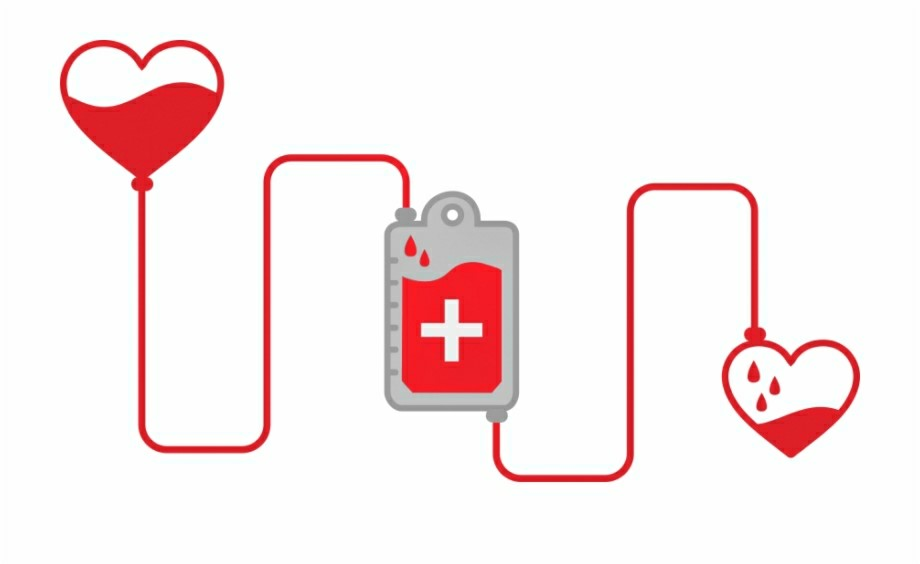

রক্তদান হল কোন প্রাপ্তবয়স্ক সুস্থ মানুষের স্বেচ্ছায় রক্ত দেবার প্রক্রিয়া। এই দান করা রক্ত পরিসঞ্চালন করা হয় অথবা অংশীকরণের মাধ্যমে ঔষধে পরিণত করা হয়। উন্নত দেশে বেশিরভাগ রক্তদাতাই হলেন স্বেচ্ছায় রক্তদাতা, যারা সামাজিক দায়বদ্ধতা থেকে রক্তদান করেন। দরিদ্র দেশগুলোতে এ ধরনের প্রতিষ্ঠিত স্বেচ্ছায় রক্তদাতার সংখ্যা বেশ কম, বেশিরভাগ রক্তদাতাই কেবল তাদের পরিচিতজনদের প্রয়োজনে রক্তদান করে থাকেন। বেশির ভাগ রক্তদাতাই সমাজসেবামূলক কাজ হিসেবে রক্তদান করেন, তবে কিছু মানুষ পেশাদার রক্তদাতা, অর্থাৎ তারা অর্থ বা কোন ভাতার বিনিময়ে রক্তদান করে থাকেন। আবার রক্তদাতা তার ভবিষ্যত প্রয়োজনে রক্ত পেতে পারেন। রক্তদান অপেক্ষাকৃত নিরাপদ, তবে কিছু রক্তদাতার যে জায়গায় সূঁচ প্রবেশ করানো হয় সেখানে কালশিরে পড়ে, আবার কেউ কেউ রক্তদানের পর দুর্বলতা অনুভব করেন।
সম্ভাব্য রক্তদাতার রক্ত ব্যবহার যে সব কারণে ঝুঁকিপূর্ণ হতে পারে তার সবকিছুই পরীক্ষা করা হয়। এই পরীক্ষাগুলোর মধ্যে রক্তের মাধ্যমে ছড়ায় এমন রোগ (যেমন এইচআইভি ও ভাইরাল হেপাটাইটিস) এর পরীক্ষা অন্তর্ভুক্ত। রক্তদাতাকে তার চিকিৎসার ইতিহাস জিজ্ঞাসা করা হয় এবং তার একটি সংক্ষিপ্ত শারীরিক পরীক্ষা করা হয় তা নিশ্চিত করার জন্যে যে রক্তদান তার শরীরের জন্যে ক্ষতিকর হবে না। একজন রক্তদাতা কতদিন পরপর রক্তদান করতে পারবেন তা নির্ভর করে তিনি কী দান করছেন তার ওপর এবং যে দেশে রক্তদান সম্পন্ন হচ্ছে সে দেশের আইনের উপর । তবে প্রতি চারমাস অন্তর অর্থাৎ ১২০ দিন পর পর মানবদেহে নতুন রক্ত তৈরি হয়। গৃহীত রক্তের পরিমাণ ও পদ্ধতি ভিন্ন হতে পারে, তবে সাধারণতঃ ৫০০ মিলিলিটার (অথবা প্রায় ১ ইউএস পাইন্ট)সম্পূর্ণ রক্ত নেওয়া হয়। পরিসঞ্চালনে ব্যবহৃত বেশির ভাগ রক্ত উপাদানই অল্প আয়ু বিশিষ্ট, এবং এ কারণে অপরিবর্তিত সরবরাহ নিশ্চিত করা একটি সবসময়কার সমস্যা।

১। রক্তদানের প্রথম এবং প্রধান কারণ: একজনের দানকৃত রক্ত আরেকজন মানুষের জীবন বাঁচাবে। ২। রক্তদান স্বাস্থ্যের জন্য অত্যন্ত উপকারী। রক্তদান করার সঙ্গে সঙ্গে শরীরের মধ্যে অবস্থিত ‘বোন ম্যারো’ নতুন কণিকা তৈরির জন্য উদ্দীপ্ত হয় এবং রক্তদানের ২ সপ্তাহের মধ্যে নতুন রক্তকণিকার জন্ম হয়ে ঘাটতি পূরণ হয়ে যায়। বছরে ৩ বার রক্তদান আপনার শরীরে লোহিত কণিকাগুলোর প্রাণবন্ততা বাড়িয়ে তোলার সাথে সাথে নতুন কণিকা তৈরির হার বাড়িয়ে দেয়। উল্লেখ্য রক্তদান করার মাত্র ৪৮ ঘণ্টার মধ্যেই দেহে রক্তের পরিমাণ স্বাভাবিক হয়ে যায়। ৩। নিয়মিত রক্তদান করলে হৃদরোগ ও হার্ট অ্যাটাকের ঝুঁকি অনেকটাই কমে যায়। ৪। আরেক গবেষণায় দেখা যায়, যারা বছরে দুই বার রক্ত দেয়, অন্যদের তুলনায় তাদের ক্যান্সারে আক্রান্ত হওয়ার ঝুঁকি কম থাকে। বিশেষ করে ফুসফুস, লিভার, কোলন, পাকস্থলী ও গলার ক্যান্সারের ঝুঁকি নিয়মিত রক্তদাতাদের ক্ষেত্রে অনেক কম পরিলক্ষিত হয়েছে। চার বছর ধরে ১২০০ লোকের ওপর এ গবেষণা চালানো হয়েছিলো। ৫। নিয়মিত স্বেচ্ছায় রক্তদানের মাধ্যমে নিজের শরীরে বড় কোনো রোগ আছে কিনা তা বিনা খরচে জানা যায়। যেমন : হেপাটাইটিস-বি, হেপাটাইটিস-সি, সিফিলিস, এইচআইভি (এইডস) ইত্যাদি। ৬। প্রতি পাইন্ট (এক গ্যালনের আট ভাগের এক ভাগ) রক্ত দিলে ৬৫০ ক্যালরি করে শক্তি খরচ হয়। অর্থাৎ ওজন কমানোর ক্ষেত্রেও এটি গুরুত্বপূর্ণ ভূমিকা রাখতে পারে। ৭। রক্তদান ধর্মীয় দিক থেকে অত্যন্ত পুণ্যের বা সওয়াবের কাজ। একজন মানুষের জীবন বাঁচানো সমগ্র মানব জাতির জীবন বাঁচানোর মতো মহান কাজ। পবিত্র কোরআনের সূরা মায়েদার ৩২ নং আয়াতে উল্লেখ আছে, "যদি কোন ব্যক্তি কোন মানুষের জীবন রক্ষা করে সে যেন পুরো মানবজাতিকেই রক্ষা করলো"।
 রক্তদান সম্পর্কিত আরো জানতে পডুন উইকিপিডিয়াতে
রক্তদান সম্পর্কিত আরো জানতে পডুন উইকিপিডিয়াতে
 জীবন বাঁচান।
জীবন বাঁচান।